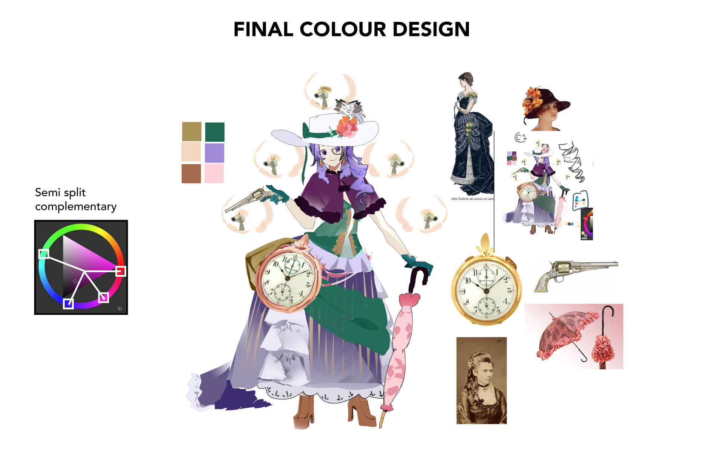
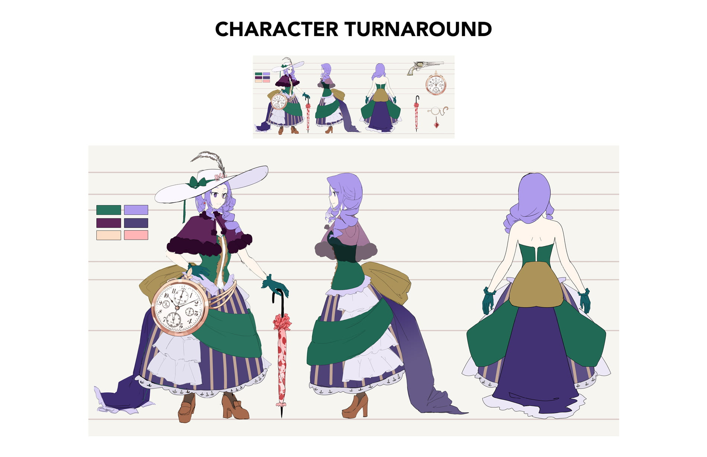
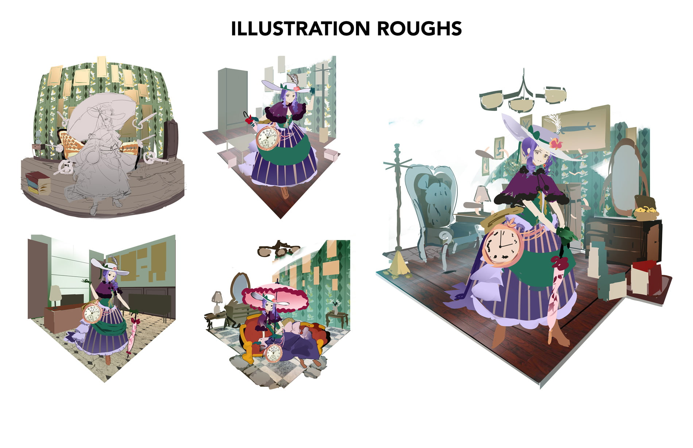

The following project is a character design study assisted by an industry professional mentor focused on creating a game that focuses on an anime style appealing to both Asian and North American audiences.
I had the opportunity to partner with Meng Wang (Also known as LucidSky) and we followed a workflow similar to how characters would be developed within the Eastern games industry. I was in charge of creating a character from start to finish as well as reporting to my mentor for updates and feedback related to the project.
The first step I was tasked with was developing the initial designs for each character using a combination of visual design, character backstories, and key words. Acting as an art director, Meng would advise me on my concepts and provide paint overs to show key insights and considerations to better my designs.
After a few rounds of paint overs and discussion we decided to settle on the following character; the Curious Time Traveler.
The next phase after completing the initial concepts was developing alternative costume ideas for our chosen character. Using our characters written background I came up with four alternative designs that would fit her personality.
After presenting the designs we decided to settle on the "19th Century Inspired" costume. We felt that this concept strongly aligned with the time traveler's backstory and best represented our character's interests and lifestyle the most.
Now that we had our character down and her specific costume, the next step was to develop alternative colour schemes and fine tune details before proceeding into final asset creation.
Meng helped me a lot on this section educating me on colour theory and providing paint overs as well as additional feedback for our time traveler's costume before we finalized her visual design.
The next step was to create a turn around sheet for our time traveler to act as an official guideline for our character. Turnaround sheets are very important as these are often used by other artists so they can better understand your design if they were to work with your character.
The turnaround sheets were combined into one image when I submitted them to Meng, but here is a close up of the individual accessories that our time traveler keeps. Its usually very common to have character turnarounds and supporting assets separated into two files.
The final step to this project was to create a finalized illustration for our time traveler so she could sit within the game. For these parts Meng assisted me in providing paint overs to better understand the lighting and placement of objects within the scene.
Last but not least, a big thank you to Meng Wang for working with me on this project! I had a wonderful experience learning alongside Meng and creating this project with her. Without her help, I wouldn't have been able to accomplish the work you see here, so please make sure to support her work too!